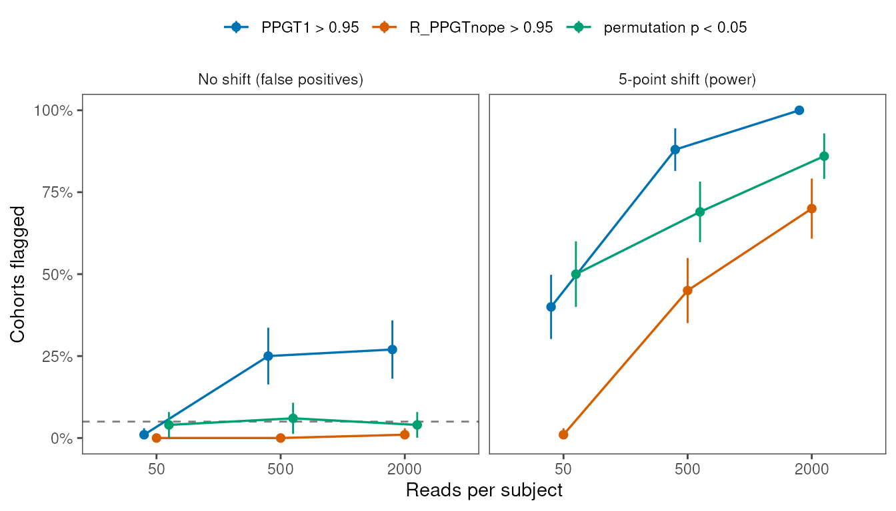
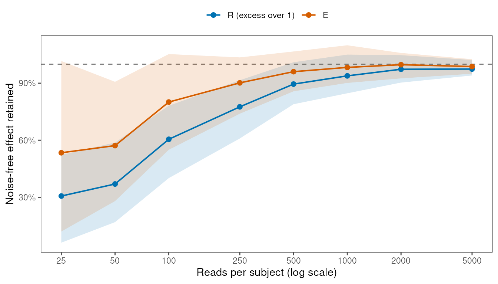
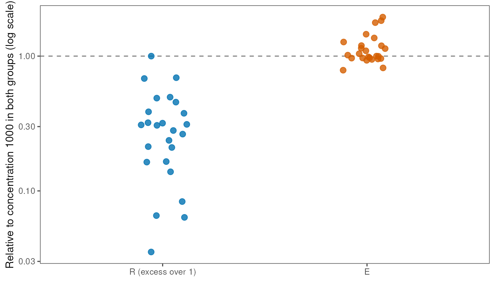
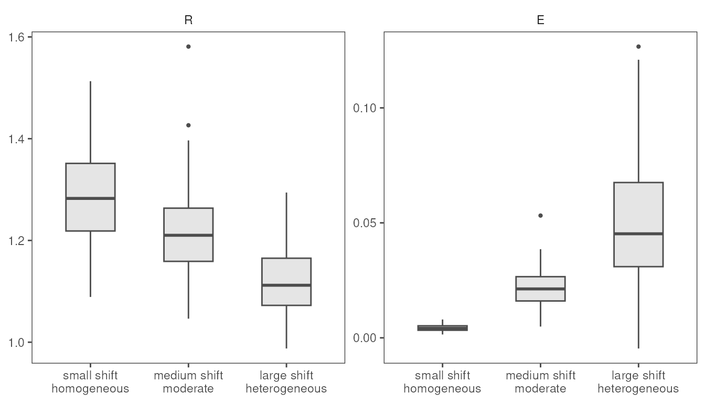

Sampling depth, NOPE, and energy distance
GW McElfresh
2026-10-20
Source:vignettes/sampling-depth.Rmd
sampling-depth.RmdSequencing depth should set the precision of a composition estimate
and leave the meaning of a summary statistic alone. Two of the package’s
headline quantities, PPGT1 and the between/within ratio
,
break that rule. PPGT1 is the posterior probability that
exceeds 1. As depth grows, the Dirichlet posterior collapses onto the
sample
.
Groups that do not differ still yield a sample
that is rarely exactly 1, so PPGT1 drifts toward 0 or 1.
also puts within-group spread in its denominator, so one composition
shift yields a large
in homogeneous cohorts and a small one in heterogeneous cohorts. Here,
we use a simulation study to show when the Null-Oriented Permutation
Equivalence (NOPE) intervals and the energy distance
(,
energyDistance) give a better-calibrated answer than
PPGT1 and
,
and when they cost power. A NOPE is a permutation-calibrated null
reference interval for a conditional effect (R_PPGTnope on
and E_PPGTnope on
).
It shares the goal of a permutation test, but it reports a region
instead of a p-value
The simulation design
Each simulated cohort has two groups of 8 subjects and 10 categories.
The internal helper simulate_composition_cohort() separates
the three sources of variation we care about:
-
Depth.
reads_per_subjectsets the multinomial count total, and with it the count noise within each subject. -
Heterogeneity. Each subject draws a latent
composition from a Dirichlet centered on its group’s mean;
concentrationsets how tightly subjects cluster (larger is more homogeneous). -
Shift.
shiftmoves composition mass from the most abundant category to the rarest one in the second group only. A shift of 0.05 is a 5-point change in composition.
The helper also returns the latent compositions, so we can compute a noise-free reference and for any cohort and measure what count noise does to each statistic.
library(HellingerDistanceEnrichment)
cohort <- HellingerDistanceEnrichment:::simulate_composition_cohort(
n_subjects_per_group = 8,
n_categories = 10,
reads_per_subject = 2000,
concentration = 50,
shift = 0,
seed = 1
)
head(cohort$long_table)
#> subjectId category group n
#> 1 Control_S01 Category0 Control 260
#> 2 Control_S02 Category0 Control 185
#> 3 Control_S03 Category0 Control 462
#> 4 Control_S04 Category0 Control 250
#> 5 Control_S05 Category0 Control 230
#> 6 Control_S06 Category0 Control 283We start with a single cohort with no shift to show the problem in miniature. We use fewer posterior draws and shuffles than the defaults to keep the vignette fast.
demo_result <- CompareGroupCompositions(
cohort$long_table,
method = "bayes",
contrasts = c("Control", "Treatment"),
nPosterior = 50,
nNopeShuffles = 100,
seed = 2
)
demo_result$omnibus[c("effectSize", "PPGT1", "R_PPGTnope", "R_nopeHigh", "energyDistance", "E_PPGTnope", "E_nopeHigh")]
#> $effectSize
#> [1] 1.013195
#>
#> $PPGT1
#> [1] 0.9
#>
#> $R_PPGTnope
#> [1] 0
#>
#> $R_nopeHigh
#> [1] 1.050782
#>
#> $energyDistance
#> [1] 0.002849613
#>
#> $E_PPGTnope
#> [1] 0
#>
#> $E_nopeHigh
#> [1] 0.009065509This cohort gives PPGT1 = 0.90 and
R_PPGTnope = 0.00, with E_PPGTnope = 0.00. One
cohort proves little either way. The scenarios below use 100 to 200
cohorts per condition from a precomputed grid.
Running the full grid
We ran about 800 Bayes cohorts at the package defaults
(nPosterior = 100, nNopeShuffles = 200). That
took about 35 minutes on five cores, which is too slow for a vignette.
The script data-raw/simulate_sampling_study.R in the source
repository runs it once and saves per-cohort summaries to
inst/extdata/sampling_study.rds. Each cohort gets its seed
from a fixed formula that we set before the first run. We did not tune
any seed toward an outcome. The saved file records which code produced
it:
study_path <- system.file("extdata", "sampling_study.rds", package = "HellingerDistanceEnrichment")
sampling_study <- readRDS(study_path)
str(sampling_study$metadata[c("packageVersion", "gitDescribe", "generatedOn")])
#> List of 3
#> $ packageVersion: chr "0.1.0"
#> $ gitDescribe : chr "cab7c93-dirty"
#> $ generatedOn : chr "2026-10-09"
str(sampling_study$metadata$settings)
#> List of 7
#> $ subjectsPerGroup : num 8
#> $ nCategories : num 10
#> $ nPosterior : num 100
#> $ nNopeShuffles : num 200
#> $ nPermutations : num 999
#> $ priorPseudocounts: num 0.5
#> $ seedFormula : chr "1e6 * scenario + 1e3 * cell + replicate"If gitDescribe lags far behind the installed package,
rerun the script before trusting the numbers below.
summarize_rate <- function(hits) {
rate <- mean(hits, na.rm = TRUE)
n_cohorts <- sum(!is.na(hits))
c(rate = rate, se = sqrt(rate * (1 - rate) / n_cohorts))
}
# Okabe-Ito hues, validated for color-vision separation; each keeps one meaning
# throughout this vignette.
rule_colors <- c(
"PPGT1 > 0.95" = "#0072B2",
"R_PPGTnope > 0.95" = "#D55E00",
"permutation p < 0.05" = "#009E73"
)
statistic_colors <- c("R (excess over 1)" = "#0072B2", "E" = "#D55E00")Scenario 1: false positives and power across depth
We simulated 100 cohorts at each of three depths (50, 500, and 2000
reads per subject), once with no shift and once with a 5-point shift, at
a moderate concentration of 50. For each cohort we recorded three
decisions: PPGT1 > 0.95,
R_PPGTnope > 0.95, and a permutation p-value below 0.05
from 999 label shuffles. We use the permutation test as the anchor,
because its false-positive rate should sit near 5% at every depth.
nope_calibration <- sampling_study$nopeCalibration
rule_hits <- list(
"PPGT1 > 0.95" = nope_calibration$PPGT1 > 0.95,
"R_PPGTnope > 0.95" = nope_calibration$R_PPGTnope > 0.95,
"permutation p < 0.05" = nope_calibration$pValue < 0.05
)
nope_cells <- split(
seq_len(nrow(nope_calibration)),
list(nope_calibration$shift, nope_calibration$readsPerSubject),
drop = TRUE
)
nope_rates <- do.call(rbind, lapply(names(rule_hits), function(rule_name) {
do.call(rbind, lapply(nope_cells, function(row_idx) {
rate <- summarize_rate(rule_hits[[rule_name]][row_idx])
data.frame(
rule = rule_name,
shift = nope_calibration$shift[row_idx[1]],
readsPerSubject = nope_calibration$readsPerSubject[row_idx[1]],
rate = rate[["rate"]],
se = rate[["se"]]
)
}))
}))
rownames(nope_rates) <- NULL
nope_rates$arm <- ifelse(nope_rates$shift == 0, "No shift (false positives)", "5-point shift (power)")
nope_rates$rule <- factor(nope_rates$rule, levels = names(rule_colors))
rate_at <- function(rule_name, shift_value, reads) {
row <- nope_rates[nope_rates$rule == rule_name & nope_rates$shift == shift_value &
nope_rates$readsPerSubject == reads, ]
sprintf("%.0f%%", 100 * row$rate)
}
library(ggplot2)
ggplot(nope_rates, aes(x = factor(readsPerSubject), y = rate, color = rule, group = rule)) +
geom_hline(
data = data.frame(arm = "No shift (false positives)", rate = 0.05),
aes(yintercept = rate),
linetype = "dashed",
color = "gray50"
) +
geom_line(linewidth = 0.6, position = position_dodge(width = 0.3)) +
geom_pointrange(
aes(ymin = pmax(0, rate - 2 * se), ymax = pmin(1, rate + 2 * se)),
size = 0.3,
position = position_dodge(width = 0.3)
) +
facet_wrap(~ factor(arm, levels = c("No shift (false positives)", "5-point shift (power)"))) +
scale_color_manual(values = rule_colors, name = NULL) +
scale_y_continuous(limits = c(0, 1), labels = function(x) paste0(100 * x, "%")) +
labs(x = "Reads per subject", y = "Cohorts flagged") +
egg::theme_article() +
theme(legend.position = "top")
Share of cohorts flagged by each decision rule, with two standard errors. The dashed line marks 5%.
With no shift, PPGT1 > 0.95 flagged 1% of cohorts at
50 reads per subject but 25% at 500 and 27% at 2000. The permutation
test held near 5% at every depth (4%, 6%, 4%).
R_PPGTnope > 0.95 never exceeded 1%, so NOPE holds its
false-positive rate at the depths where PPGT1 loses it.
That calibration costs power. With a 5-point shift at 2000 reads, the
permutation test detected 86% of cohorts and
R_PPGTnope > 0.95 detected 70%. At 50 reads per subject
the gap widens to 50% versus 1%. Dirichlet noise at shallow depth pulls
every draw’s
toward 1, while the shuffled edge stays near 1.06. The 0.95 threshold is
strict: nearly every posterior draw must clear its own 95th shuffle
percentile, the equivalent of a significant shuffle test in 95% of
draws.
nope_half <- aggregate(
cbind(flagged = R_PPGTnope > 0.5) ~ shift + readsPerSubject,
data = nope_calibration,
FUN = mean
)
nope_half
#> shift readsPerSubject flagged
#> 1 0.00 50 0.01
#> 2 0.05 50 0.27
#> 3 0.00 500 0.06
#> 4 0.05 500 0.69
#> 5 0.00 2000 0.04
#> 6 0.05 2000 0.85A looser reading, R_PPGTnope > 0.5, flags a cohort
when a typical draw clears its shuffle edge. In this grid it flagged 4%
of null cohorts and 85% of shifted cohorts at 2000 reads, close to the
permutation test. The package reports the posterior probability and
leaves the threshold to you. Pick one that matches your tolerance for
false positives. Take heed that R_PPGTnope > 0.95 sits
at the conservative end.
The NOPE on
uses the same shuffles, so we recorded E_PPGTnope for every
cohort as well.
summarize_rule <- function(hits) sprintf("%.0f%%", 100 * mean(hits, na.rm = TRUE))
nope_by_statistic <- do.call(rbind, lapply(nope_cells, function(row_idx) {
cell <- nope_calibration[row_idx, ]
data.frame(
shift = cell$shift[1],
readsPerSubject = cell$readsPerSubject[1],
R_PPGTnope_95 = summarize_rule(cell$R_PPGTnope > 0.95),
E_PPGTnope_95 = summarize_rule(cell$E_PPGTnope > 0.95),
R_PPGTnope_50 = summarize_rule(cell$R_PPGTnope > 0.5),
E_PPGTnope_50 = summarize_rule(cell$E_PPGTnope > 0.5),
permutation_05 = summarize_rule(cell$pValue < 0.05),
medianE_nopeHigh = signif(stats::median(cell$E_nopeHigh), 2)
)
}))
rownames(nope_by_statistic) <- NULL
nope_by_statistic
#> shift readsPerSubject R_PPGTnope_95 E_PPGTnope_95 R_PPGTnope_50 E_PPGTnope_50
#> 1 0.00 50 0% 0% 1% 1%
#> 2 0.05 50 1% 1% 27% 29%
#> 3 0.00 500 0% 1% 6% 5%
#> 4 0.05 500 45% 43% 69% 69%
#> 5 0.00 2000 1% 1% 4% 4%
#> 6 0.05 2000 70% 70% 85% 85%
#> permutation_05 medianE_nopeHigh
#> 1 4% 0.0250
#> 2 50% 0.0260
#> 3 6% 0.0110
#> 4 69% 0.0130
#> 5 4% 0.0098
#> 6 86% 0.0120
energy_rate_at <- function(threshold, shift_value, reads) {
cell <- nope_calibration[nope_calibration$shift == shift_value & nope_calibration$readsPerSubject == reads, ]
sprintf("%.0f%%", 100 * mean(cell$E_PPGTnope > threshold, na.rm = TRUE))
}
energy_edge_at <- function(reads) {
signif(stats::median(nope_calibration$E_nopeHigh[nope_calibration$readsPerSubject == reads]), 2)
}E_PPGTnope tracks R_PPGTnope in this grid.
With no shift, E_PPGTnope > 0.95 flagged at most 1% of
cohorts at any depth. With a 5-point shift it detected 70% of cohorts at
2000 reads and 43% at 500. The edge itself moves with depth. Its median
fell from 0.025 at 50 reads per subject to 0.011 at 2000; shallow count
noise likely widens the spread of
across shuffles. Across all six cells, the two NOPEs reached the same
decision at 0.95 in 98% of cohorts. These cohorts differ only by a shift
in mean composition, which moves
and
together. Scenario 5, where groups differ in spread, is where the two
part.
Scenario 2: depth and the size of each statistic
We held each cohort’s latent compositions fixed, changed the number of reads drawn from each subject, and measured how much of the true effect each statistic kept. We drew 200 cohorts with a 5-point shift, computed and on the latent compositions as a noise-free reference, then resampled counts at eight depths from 25 to 5000 reads per subject. For we track the excess over 1, because 1 is its no-difference value. For , 0 is the no-difference value, so we track itself.
depth_drift <- sampling_study$depthDrift
depth_drift$rRetained <- (depth_drift$effectSize - 1) / (depth_drift$referenceEffectSize - 1)
depth_drift$eRetained <- depth_drift$energyDistance / depth_drift$referenceEnergyDistance
summarize_retained <- function(values, statistic_label, reads) {
data.frame(
statistic = statistic_label,
readsPerSubject = reads,
median = stats::median(values),
lower = stats::quantile(values, 0.25, names = FALSE),
upper = stats::quantile(values, 0.75, names = FALSE)
)
}
depth_summary <- do.call(rbind, lapply(split(depth_drift, depth_drift$readsPerSubject), function(cell) {
rbind(
summarize_retained(cell$rRetained, "R (excess over 1)", cell$readsPerSubject[1]),
summarize_retained(cell$eRetained, "E", cell$readsPerSubject[1])
)
}))
rownames(depth_summary) <- NULL
depth_summary$statistic <- factor(depth_summary$statistic, levels = names(statistic_colors))
retained_at <- function(statistic_label, reads) {
sprintf("%.0f%%", 100 * depth_summary$median[depth_summary$statistic == statistic_label &
depth_summary$readsPerSubject == reads])
}
ggplot(depth_summary, aes(x = readsPerSubject, y = median, color = statistic)) +
geom_hline(yintercept = 1, linetype = "dashed", color = "gray50") +
geom_ribbon(aes(ymin = lower, ymax = upper, fill = statistic), alpha = 0.15, color = NA) +
geom_line(linewidth = 0.7) +
geom_point(size = 2) +
scale_x_log10(breaks = sort(unique(depth_summary$readsPerSubject))) +
scale_y_continuous(labels = function(x) paste0(100 * x, "%")) +
scale_color_manual(values = statistic_colors, name = NULL) +
scale_fill_manual(values = statistic_colors, guide = "none") +
labs(x = "Reads per subject (log scale)", y = "Noise-free effect retained") +
egg::theme_article() +
theme(legend.position = "top")
Share of the noise-free effect each statistic keeps as depth falls (median and interquartile range over 200 cohorts).
Both statistics shrink at shallow depth, and shrinks less. At 50 reads per subject the excess of keeps 37% of its noise-free value while keeps 57%. By 500 reads they reach 90% and 96%. The two shrink for different reasons. Count noise adds to between- and within-group distances alike, which pulls toward 1. With squared distances that noise cancels from in expectation. still shrinks because Jeffreys softening pulls every shallow composition toward uniform, and because the square root of a noisy proportion is biased downward. Take heed of the wide interquartile range for at 25 and 50 reads: is less biased than at shallow depth, but no more precise.
Scenario 3: the same shift in groups of different spread
We held the shift at 5 points and the depth at 2000 reads, and varied each group’s concentration on its own over 10, 30, 100, 300, and 1000. The 25 cells cover equally homogeneous groups, equally heterogeneous groups, and every mix where one group is more variable than the other, as when a disease arm scatters more than control. Each cell holds 100 cohorts.
heterogeneity <- sampling_study$heterogeneity
cell_medians <- aggregate(
cbind(effectSize, energyDistance) ~ controlConcentration + treatmentConcentration,
data = heterogeneity,
FUN = stats::median
)
reference_cell <- cell_medians$controlConcentration == 1000 & cell_medians$treatmentConcentration == 1000
relative_values <- rbind(
data.frame(
statistic = "R (excess over 1)",
relative = (cell_medians$effectSize - 1) / (cell_medians$effectSize[reference_cell] - 1)
),
data.frame(
statistic = "E",
relative = cell_medians$energyDistance / cell_medians$energyDistance[reference_cell]
)
)
relative_values$statistic <- factor(relative_values$statistic, levels = names(statistic_colors))
fold_range <- function(statistic_label) {
values <- relative_values$relative[relative_values$statistic == statistic_label]
sprintf("%.1f", max(values) / min(values))
}
ggplot(relative_values, aes(x = statistic, y = relative, color = statistic)) +
geom_hline(yintercept = 1, linetype = "dashed", color = "gray50") +
geom_point(size = 2.5, alpha = 0.8, position = position_jitter(width = 0.12, height = 0, seed = 1)) +
scale_y_log10() +
scale_color_manual(values = statistic_colors, guide = "none") +
labs(x = NULL, y = "Relative to concentration 1000 in both groups (log scale)") +
egg::theme_article()
Median of each statistic in the 25 spread combinations, relative to the most homogeneous cell. Every cell uses the same 5-point shift.
The same 5-point shift gave a median anywhere from 1.04 to 2.02 across these cells, a 28.4-fold range in the excess over 1, because divides by within-group spread. moved over a 2.5-fold range. If you compared these cohorts by , you would report a shift that grew and shrank with group spread although we never changed it. We suspect the square root’s curvature explains the residual movement in . When subjects scatter widely around their group mean, the mean of their square-root compositions falls. A shift toward a rare category likely interacts with that curvature.
round(tapply(
heterogeneity$pValue < 0.05,
list(control = heterogeneity$controlConcentration, treatment = heterogeneity$treatmentConcentration),
mean
), 2)
#> treatment
#> control 10 30 100 300 1000
#> 10 0.22 0.75 1.00 1 1
#> 30 0.57 0.53 0.96 1 1
#> 100 1.00 0.95 0.99 1 1
#> 300 1.00 1.00 1.00 1 1
#> 1000 1.00 1.00 1.00 1 1The permutation test on detected the shift in nearly every cell except where both groups were heterogeneous (concentration 10 or 30 in both), where power fell as low as 22%. Heterogeneity lowers power here, and the p-value is the place to report that loss.
Scenario 4: ranking contrasts
Ranking pairwise contrasts by effect size is a common next step after an omnibus test. Spread in the denominator does the most damage there. We built three contrasts per replicate in which the largest shift sits in the most heterogeneous groups and the smallest in the most homogeneous ones: a 2-point shift at concentration 1000, a 5-point shift at 100, and an 8-point shift at 20. Each replicate includes all three. We count how often each statistic orders them by their true shift.
ranking <- sampling_study$ranking
ranking$contrastLabel <- factor(
ranking$contrastLabel,
levels = c("small shift, homogeneous", "medium shift, moderate", "large shift, heterogeneous")
)
orders_by_shift <- function(values, shifts) all(diff(values[order(shifts)]) > 0)
by_replicate <- split(ranking, ranking$replicate)
r_correct <- mean(vapply(by_replicate, function(d) orders_by_shift(d$effectSize, d$shift), logical(1)))
e_correct <- mean(vapply(by_replicate, function(d) orders_by_shift(d$energyDistance, d$shift), logical(1)))
r_inverted <- mean(vapply(by_replicate, function(d) {
d$effectSize[d$shift == 0.02] > d$effectSize[d$shift == 0.08]
}, logical(1)))
aggregate(cbind(effectSize, energyDistance) ~ contrastLabel, data = ranking, FUN = stats::median)
#> contrastLabel effectSize energyDistance
#> 1 small shift, homogeneous 1.282585 0.004165164
#> 2 medium shift, moderate 1.210152 0.021277407
#> 3 large shift, heterogeneous 1.111942 0.045250209
ranking_long <- rbind(
data.frame(contrastLabel = ranking$contrastLabel, statistic = "R", value = ranking$effectSize),
data.frame(contrastLabel = ranking$contrastLabel, statistic = "E", value = ranking$energyDistance)
)
ranking_long$statistic <- factor(ranking_long$statistic, levels = c("R", "E"))
ggplot(ranking_long, aes(x = contrastLabel, y = value)) +
geom_boxplot(width = 0.5, outlier.size = 0.8, color = "gray30", fill = "gray90") +
facet_wrap(~ statistic, scales = "free_y") +
scale_x_discrete(labels = function(x) sub(", ", "\n", x)) +
labs(x = NULL, y = NULL) +
egg::theme_article()
R and E across the three contrasts, ordered by true shift (200 replicates).
ordered the three contrasts by their true shift in 84% of replicates; did so in 2%. placed the 2-point shift in homogeneous groups above the 8-point shift in heterogeneous groups in 94% of replicates. answers a different question correctly here: relative to its spread, the small homogeneous shift is the more separable one. misleads when you use it to ask which contrast moved composition the most.
Scenario 5: a difference in spread with no shift
We next isolate a spread difference from a mean shift, the one case where and disagree by design. Both groups share one mean composition, but the treatment group scatters more than control (concentration 15 versus 200). We include a matched arm with equal spread (200 versus 200) as the baseline. Each arm holds 100 cohorts at 2000 reads per subject.
spread_only <- sampling_study$spreadOnly
spread_summary <- do.call(rbind, lapply(split(spread_only, spread_only$treatmentConcentration), function(arm) {
data.frame(
treatmentConcentration = arm$treatmentConcentration[1],
medianR = stats::median(arm$effectSize),
medianE = stats::median(arm$energyDistance),
permutationFlagged = mean(arm$pValue < 0.05),
ppgtnopeFlagged = mean(arm$R_PPGTnope > 0.95),
energyNopeFlagged = mean(arm$E_PPGTnope > 0.95)
)
}))
rownames(spread_summary) <- NULL
spread_summary
#> treatmentConcentration medianR medianE permutationFlagged
#> 1 15 1.1481730 0.0043386735 1.00
#> 2 200 0.9919977 -0.0003266425 0.02
#> ppgtnopeFlagged energyNopeFlagged
#> 1 0.99 0.09
#> 2 0.00 0.00
shifted_e <- stats::median(nope_calibration$energyDistance[nope_calibration$shift == 0.05 &
nope_calibration$readsPerSubject == 2000])
spread_e <- spread_summary$medianE[spread_summary$treatmentConcentration == 15]A spread difference alone pushed
to a median of 1.15. Both the permutation test (100%) and
R_PPGTnope > 0.95 (99%) flagged nearly every cohort,
while E_PPGTnope > 0.95 flagged 9%. Pairwise Hellinger
distances between a tight group and a scattered group tend to exceed the
average of the two within-group distances. The ratio therefore rises
above 1 even though the centroids coincide.
moved to a median of 0.0043, about 20% of the median
for a 5-point shift at the same depth.
Your question sets which behavior you want. If a change in
subject-to-subject variability is the biology of interest,
and its tests detect it and
barely moves. If the question is whether mean composition shifted, a
significant R_PPGTnope here is a true statement about the
distance distributions but a misleading answer about composition.
near 0 is the warning sign. When you read the two together, a large
or R_PPGTnope beside an
near 0 and a low E_PPGTnope marks a spread difference.
Choosing a quantity
| Situation | Favored quantity |
|---|---|
| Deep sampling, deciding whether groups differ | R_PPGTnope, E_PPGTnope, or the permutation p-value; not PPGT1 |
| Shallow sampling or small shifts, deciding whether groups differ | Permutation p-value; NOPE probabilities > 0.95 lose power |
| Reporting effect size across depths or studies | E (shrinks less than R) |
| Groups with different or unequal spread | E |
| Ranking contrasts | E |
| Spread differs but mean composition does not | R and R_PPGTnope detect it; E and E_PPGTnope stay low |
Split the work between the quantities. Decide with the
label-shuffling machinery, either the permutation p-value or the NOPE
probabilities. Those methods hold their false-positive rate as depth
grows; PPGT1 does not. Pick E_PPGTnope when
the question is whether mean composition shifted, and
R_PPGTnope when a difference in spread also counts.
Describe the size of the effect with
,
because it keeps its meaning across depth, heterogeneity, and contrasts
better than
does. Keep
in view as well: a large
beside a small
is the signature of a spread difference. We simulated one family of
cohorts (8 versus 8 subjects, 10 categories, a shift into the rarest
category). The exact percentages will move with your design. The
direction of each comparison follows from the mechanisms above, so we
expect it to hold.